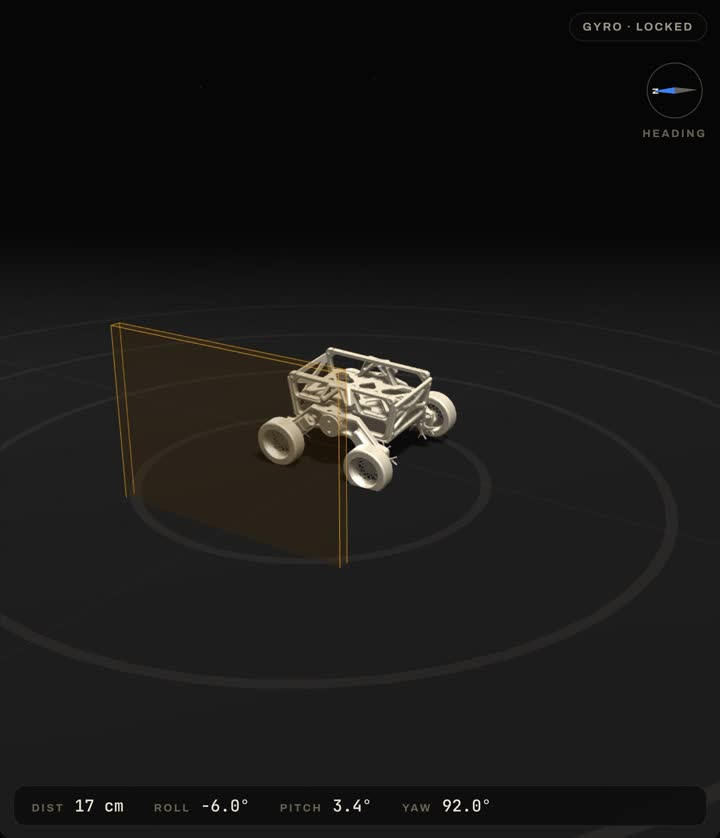
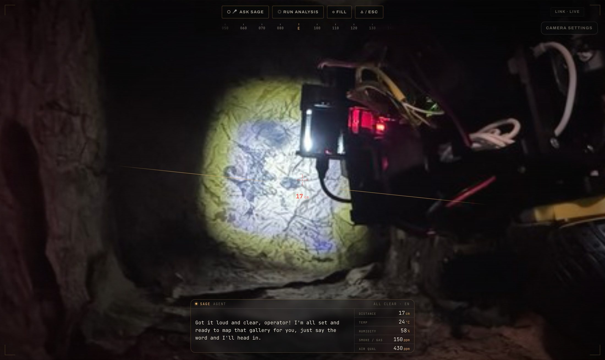

Recon run
Send it down a corridor on a routine that keeps running even if the link drops.
 Future Innovators
Future Innovators
A recon rover for places people should not enter. It drives in, looks around, and says what it sees.
The run
One operator, one screen. The rover walks into the part nobody wants to walk into.
Send it down a corridor on a routine that keeps running even if the link drops.
Distance, temperature, humidity and heading stream back, next to the camera feed.

The onboard voice names what the camera sees, out loud, in English or Spanish.

Anything worth a second look is saved with its frame, so you can walk the run back.
The console
Real screens, straight out of the app. Drive it, watch its sensors, brief Sage on the mission — one laptop on the surface, running the whole thing.

Gyro · LockedThe chassis tilts and turns on screen exactly as the real one does underground — roll, pitch and heading, read straight off the sensors.
Pick an angle →I'll help you with anything.
Nothing asked yet.
Briefed on the mission, Sage calls the entry status, narrates what the camera sees, and talks back the moment you ask it something.
Ask it something →
One tap and the whole screen becomes the camera feed — heading tape, distance reticle, Sage talking over the top.
Move over the frame →Drag a few blocks together and the rover runs the mission on its own — the routine survives even if the link back to it drops.
Build one, run it · hover the tape →Pricing

Competition fiction: Blackout is a WRO 2026 Future Innovators project, not a company. The prices are part of the pitch — nothing here is for sale. The robot, the code and the camera frames are real.
Model library
Pick a model to read its file.
Sponsors
All the ranks Want a slot? Talk to the team.